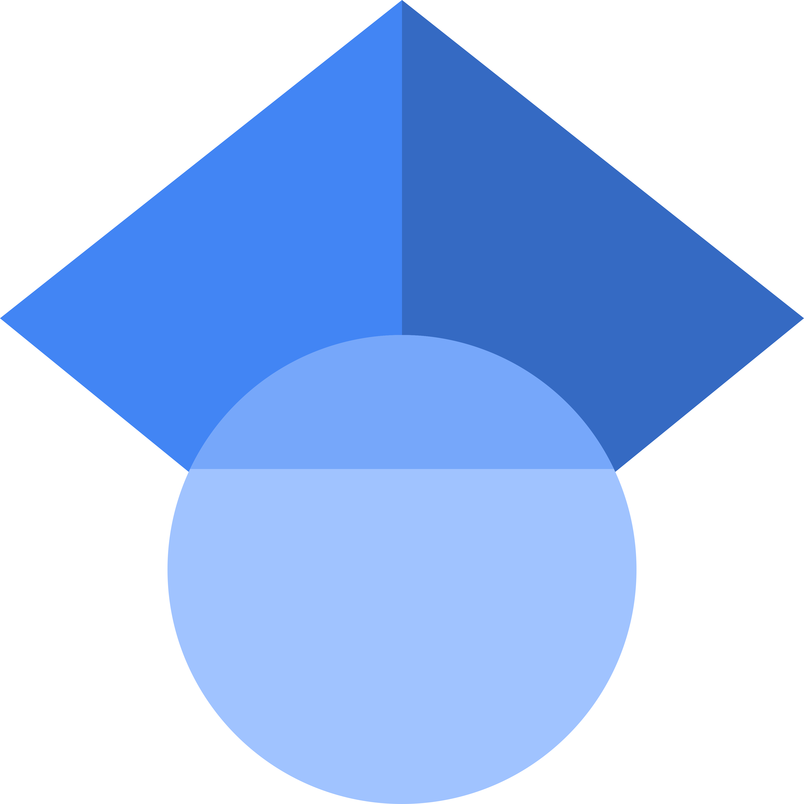
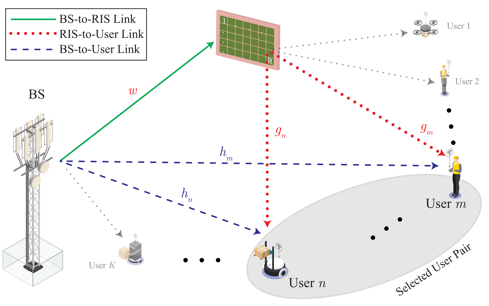
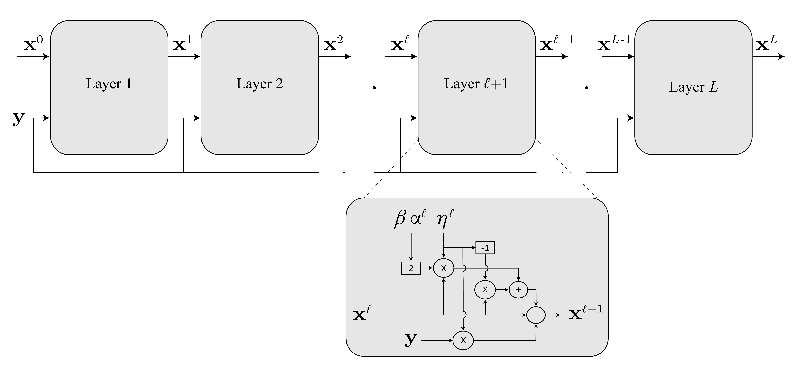
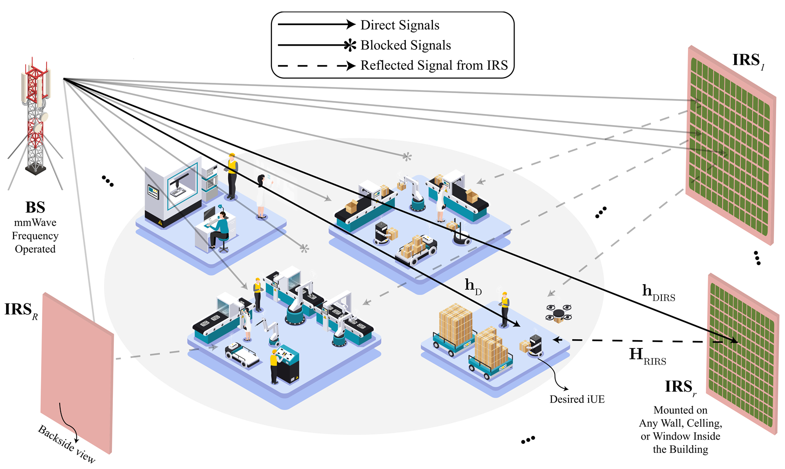
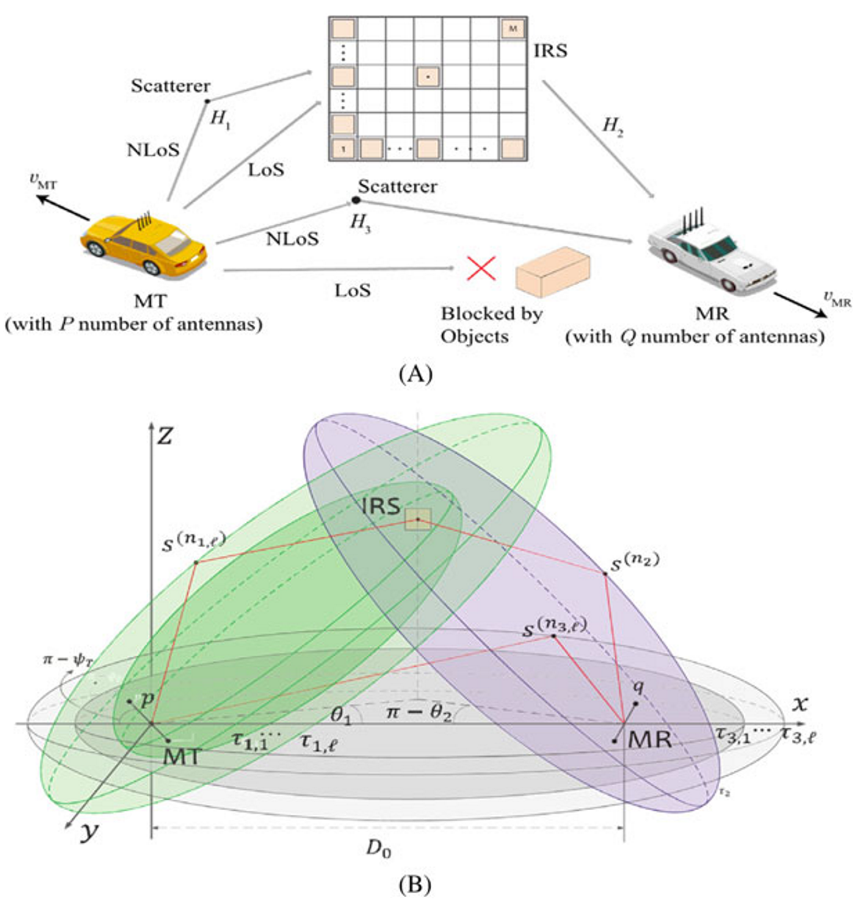
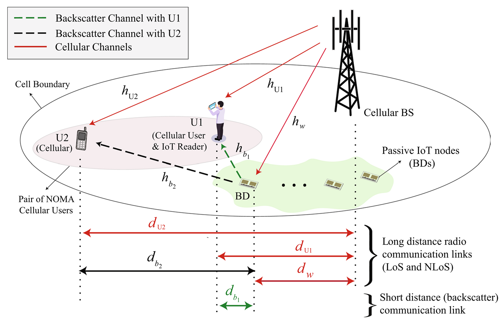
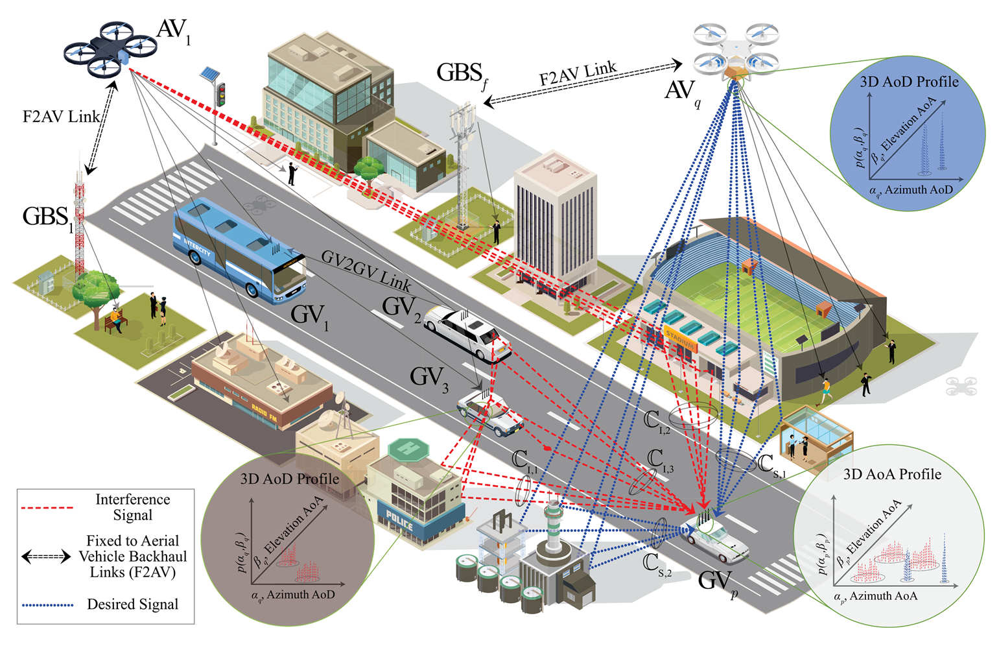

About
I am a Marie Sklodowska-Curie doctoral fellow under EXACT-6G project and doctoral researcher at University of Oulu, Finland. I received my master's degree in electrical engineering from COMSATS University Islamabad in 2020, where I also served as a Research Assistant. My master's research focused on spatial modeling of interference in inter-vehicular networks within three-dimensional volumetric environments. After graduation, I contributed to collaborative research with GC University and University College Cork, focusing on integrating reconfigurable intelligent surfaces (RIS) into mmWave and THz communication systems for smart industrial environments and other next-generation wireless applications. My current research interests include user localization, integrated sensing and communications (ISAC), machine learning, and signal processing in 6G wireless communications system.
Research
Interests
Impact

Data Fetched From
Google Scholar
| Citations | 56 | |
| h-index | 4 | |
| i10-index | 3 |
Education
-
2024 - Present
Ph.D. Communications Engineering
University of Oulu, Finland
Focused on signal processing for RIS-based connectivity and JCAS. This involved optimizing key performance indicators (KPIs) like connectivity, spectral/power/energy efficiency, designing algorithms using optimization and machine learning, and validating them via simulations.
-
2018 — 2020
M.Sc. Electrical Engineering
COMSATS University Islamabad, Pakistan (Main Campus)
Thesis related to wireless communication (physical Layer, V2V communication, channel and interference modeling). CGPA=3.56 (81.25%)
-
2014 — 2018
B.Sc. Electrical Engineering
COMSATS University Islamabad, Pakistan (Wah Campus)
Thesis related to structural health monitoring for buildings using Raspberry Pi and Python. CGPA=2.8 (73.43%)
Experience
-
Nov. 2024 — Present
Doctoral Researcher
CWC - University of Oulu, Finland
My research focused on signal processing for physical and link layers, utilizing Reconfigurable Intelligent Surfaces (RIS) to enhance connectivity and Joint Communication and Sensing (JCAS). This involved exploring performance limits, formulating optimization problems for key KPIs (connectivity, spectral/power/energy efficiency), designing algorithms using optimization and machine learning, and validating them through simulations.
-
Apr. 2019 — Mar. 2020
Research Assistant
COMSATS University Islamabad, Pakistan
Key Responsibilities: Technical Writing, Simulations, Comprehensive Research, B.S. Engineering Subject Teaching, and Academic Related Activities.
Achievements: I have published two research articles, which are listed below. During my time as a research assistant, I gained experience in various aspects of research work, including proficiency in statistical software, data analysis, and programming. Additionally, I have honed my presentation skills by delivering research findings at conferences and other academic events.
-
Jun. 2017 — Aug. 2017
Internee (PCB Designing)
AKSA-SDS Islamabad, Pakistan
Key Responsibilities: PCB Designing, Reverse Engineering, and Circuit Tracing.
Achievements: I gained proficiency in PCB design software Altium Designer and obtained hands-on experience in designing and tracing circuits for military-based publications.
-
2023 — 2025
University College Cork, Ireland
Key Responsibilities: Leveraging my expertise in mmWave/THz, IRS, and NOMA, I contribute to the development of novel algorithms for 6G and beyond systems aimed at revolutionizing Smart Industry 5.0. Through meticulous design and simulation using MATLAB or Python.
Achievements: Published two conference paper and will collaborate for more research work in future.
-
2018 — 2020
Government College University Faisalabad, Pakistan
Key Responsibilities: Conducted an extensive literature review on THz and mmWave communication systems, with a particular focus on their operating principles and the application of IRS. Studied the current state of the art and research challenges in these areas.
Achievements: Published a survey letter and will collaborate for more research work in future.
Collaboration
Publications
-

TeraRIS NOMA-MIMO Communications for 6G and Beyond Industrial Networks
This paper investigates a unified RIS-assisted THz NOMA-MIMO framework for smart industrial communications. By exploiting RIS and THz bands, the system enhances spectral efficiency, coverage, and reliability for future 6G networks. Two power-allocation strategies are studied, optimal near–far node allocation and demand-aware prioritization. Performance analysis shows up to a 23% sum-rate gain over fixed power allocation, confirming the effectiveness of the proposed framework.
-

Deep Unfolding of Atomic Norm Minimization for DoA Estimation
Direction-of-arrival (DoA) estimation is vital in radar and mobile positioning. While atomic norm minimization (ANM) offers high accuracy, its SDP-based solution is computationally heavy. We propose a deep unfolded gradient descent method with an approximated ANM function, where parameters are learned through training. This approach achieves competitive accuracy with much lower complexity, making it practical for real-world DoA estimation.
-

A Performance Analysis of IRS-assisted Communication for 6G-Enabled Future Smart Industries
As Industry 4.0 takes hold, dependable communication is crucial. While mmWave technology holds promise, limitations like range and interference remain. This research explores how Intelligent reflecting surfaces (IRS) can revolutionize wireless networks by manipulating radio waves. The study examines the impact of IRS placement and the number of elements deployed, finding significant improvements in coverage, reliability, and achievable data rates compared to traditional systems.
-

Intelligent reflecting surface-assisted terahertz communication towards B5G and 6G: State-of-the-art
Beyond 5G, terahertz (THz) bands and intelligent reflecting surfaces (IRS) emerge as key factors for boosting data rates and link reliability in 6G networks. This paper compares IRS-assisted THz communication systems, paving the way for transformative applications like autonomous driving and virtual reality.
-

A NOMA‑Enabled Cellular Symbiotic Radio for mMTC
Non-orthogonal access (NOMA) promises high spectral efficiency in 5G networks, making it ideal for dense IoT deployments. We analyze a NOMA-based system with backscatter communications, enabling ultra-low power IoT connectivity. Closed-form expressions for performance metrics and insightful use cases for future massive IoT networks are presented. Numerical results validate the theoretical findings.
-

Spatial Modeling of Interference in Inter-Vehicular Communications for 3-D Volumetric Wireless Networks
This work introduces a generalized framework for modeling interference in 3D UAV-assisted cell-free vehicular networks. The framework encompasses diverse scenarios while capturing key spatial fading statistics. It simplifies existing models by encompassing them as special cases and reveals the impact of factors like mobility and altitude on interference patterns. Future work will explore integrating intelligent surfaces for better control over network behavior.
-
Spatial Modeling of Interference for 3-D Cell-free Inter-Vehicular Communications
This thesis proposes a framework for modeling the spatial statistics of the signal-to-interference ratio (SIR) in 3-D volumetric inter-vehicular communication channels, with a focus on UAV-assisted cell-free vehicular communications. The framework incorporates three-dimensional mobility at both link ends and includes several notable two-dimensional propagation models. The authors derive analytical expressions for various SIR fading statistics, such as level-crossing-rate, average-fadeduration, spatial auto-covariance, and coherence distance, and analyze the impact of channel parameters such as direction and velocity of mobile nodes and the altitude of the UAV. The thesis also discusses future extensions of this work, such as the integration of intelligent reflective surfaces to generate favorable channel conditions.
-
Remote Health Monitoring and Automated Supervision of Buildings
The project aims to monitor the health of a building through IoT (using Raspberry Pi + Python) and discusses the factors that influence a building’s health such as cracking, bending, and tilting. Health monitoring and automation supervision of buildings are both parts of the project. An example of the automation aspect is the development of a device that automatically turns off the gas supply during gas load-shedding to prevent incidents like gas leakage and fire. The project focuses on a specific type of building structure.
Research Papers
Thesis
Certifications & Trainings
-
5G for Everyone
Institution: Qualcomm Wireless Academy
Instructor: Nakul H. Navarange
-
Supervised Machine Learning: Regression and Classification
Institution: DeepLearning.AI Stanford University
Instructor: Andrew Ng
-
Programming for Everyone (Getting Started with Python)
Institution: University of Michigan
Instructor: Charles Russell
-
School 1: 5G and 6G Architectures, Enabling Technologies, Verticals and KPIs & Standards
School 2: Validation of 6G Networks: Key Analytical, Prediction, Simulation, Experimental Tools
Organizers: 6G-BRICKS Consortium, Co-organised Together with 6G-SUNRISE, ADROIT-6G, and 6G-INTENSE
Invited Speakers
Nurul Huda Mahmood & Nhan Nguyen
University of Oulu, Finland
Sofie Pollin
KU Leuven, Belgium
François Rottenberg
Ghent Technology Campus, Belgium
Adlen Ksentini
EURECOM, France
Paolo Monti
Chalmers University of Technology, Sweden
Carlos Natalino Da Silva & Francesco Linsalata
Politecnico di Milano, Italy
George Iosifidis
TU Delft, Netherlands
Zois Soumplis
National and Kapodistrian University of Athens, Greece
-
School 4: Emerging Trends in AI, Edge Intelligence, and 6G Networks
School 5: Practical Training in Kubernetes and OpenAirInterface
Organizers: EURECOM, France
Invited Speakers
Raphaël Troncy
Adlen Ksentini
Roberto Morabito
Giulio Franzese
Mohamed Mekki
Karim BoutibaEURECOM, France
-
School 3: PHY Layer Techniques and Design Principles in 6G
School 6: Data Analysis and Machine Learning for Network Management and Automation
Organizers: EXACT-6G Consortium
Invited Speakers
Dileepa Marasinghe, Nuwanthika Rajapaksha, Thushan Sivalingam, Nandana Rajatheva, David Ruiz Guirola, Osmel Martinez, Markku Juntti, Nhan Nguyen, Visa Tapio
University of Oulu, Finland
Mahdi Sharara
Viavi Solutions, France
Hatim Chergui
i2CAT Foundation, Spain
Aris Leivadeas
École de technologie supérieure (ÉTS), Canada
Alberto Conte & Antonio Massaro
Nokia Bell Labs, France
Youssef Nasser
Greenerwave, France
Coursera
Marie Curie Training Schools (EXACT-6G)
Affiliations
-
- Graduate Student Member #100799204
- Finland Section
- ComSoc
- Young Professional
-
- Member of Marie Curie Alumni Association (MCAA) (0243246)
- Finland Chapter
-
- IEEE Access
- IEEE WCL
- Springer
- FIT Conference
- SPAWC Conference
- VTC Conference
-
- Member of Engineer with Pakistan Engineering Council (PEC-Elect/73296)
IEEE
European Union's MSCA
International Peer Reviewer
Registered Engineer
Achievements
Fellowships
Awards
Skills & Expertise
Signal Processing
DSP, Channel Estimation, Modulation, Coding
Simulation & Modeling
MATLAB, Python, Numerical Simulations
Optimization Techniques
Linear, Convex, Stochastic Optimization
Machine Learning & AI
Deep Learning, Reinforcement Learning
Emerging Technologies
RIS, JCAS, Massive MIMO, mmWave, THz
Research & Analysis
Literature Review, Data Analysis, Statistical Analysis
Problem Solving
Critical Thinking & Analytical Skills
Communication
Technical Writing, Presentations
Collaboration
Teamwork & Leadership
Project Management
Planning, Organization, Time Management
Photo/Video Designing
Adobe | Photoshop, Illustrator, Premiere Pro
Adaptability
Continuous Learning & Professional Growth